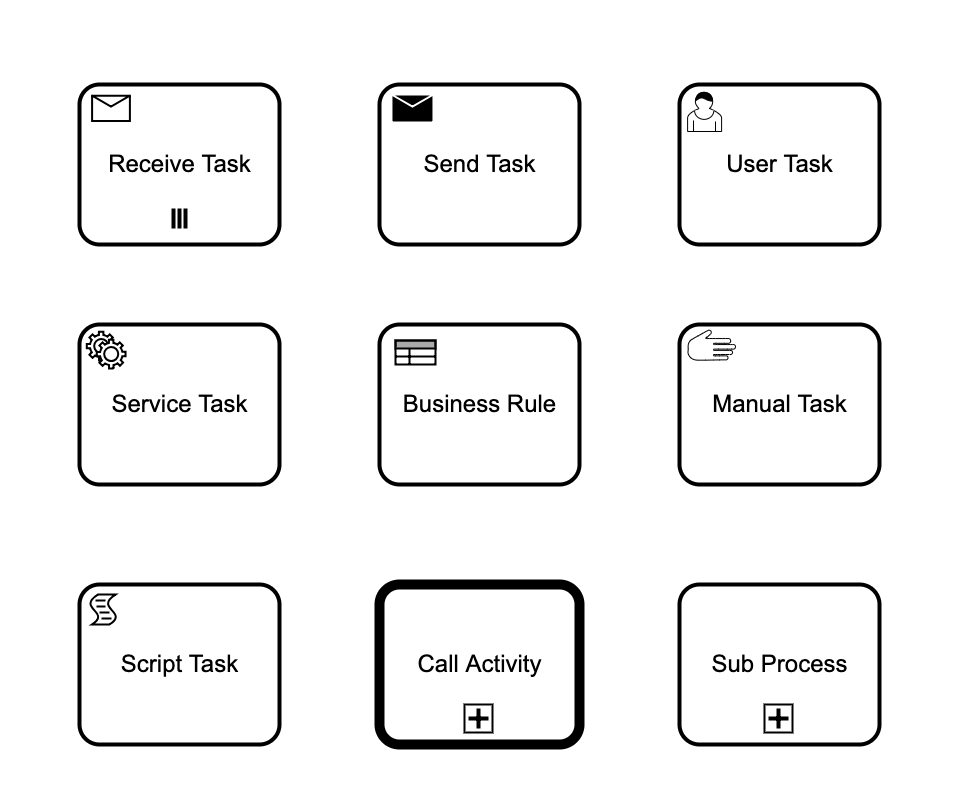
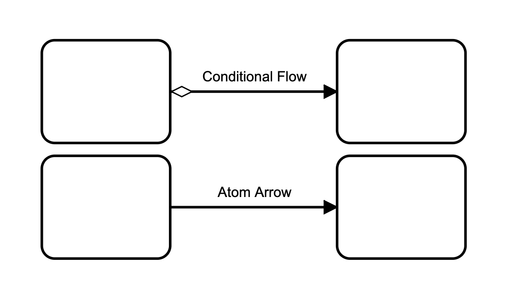

INTRO
The bpe_task module provides task-handling functionality. Tasks are workflow nodes (vertices) containing metadata, prompt states, execution requirements, and role permissions.
TASKS
BPE supports multiple task records defined in bpe.hrl:

Base Task Fields (?TASK Macro)
Every task record inherits the following default properties:
id: A unique list or atom identifying the task node.name: A descriptive name or binary string for UI presentation.input: Input parameter schema.output: Output parameter schema.prompt: Prompt configurations.roles: A list of allowed roles (atoms) authorized to trigger this task.etc: Additional key-value metadata list.
Task Types
#beginEvent{}
The start node of the process.
-record(beginEvent, { ?TASK }).#endEvent{}
The final node of the process. Reaching this task automatically stops process execution.
-record(endEvent, { ?TASK }).#task{}
A generic task node.
-record(task, { ?TASK }).#userTask{}
A task that requires human interaction/authorization (e.g., approvals).
-record(userTask, { ?TASK }).#serviceTask{}
An automated task executing back-end service integration logic.
-record(serviceTask, { ?TASK }).#receiveTask{}
Blocks the process execution until an external reader message event is received.
-record(receiveTask, { ?TASK, reader = [] :: #reader{} }).#sendTask{}
Performs outbound communication/notifications.
-record(sendTask, { ?TASK, writer = [] :: #writer{} }).FLOWS
Connections between tasks are configured using sequenceFlow structures:

CALLBACK API
BPE delegates task execution logic to your process module. You must implement the action/2
callback:
action({request, From::atom(), To::atom()}, #process{}) -> #result{}
The return structure is defined by the #result{} record:
-record(result, {
type = reply :: reply | noreply | stop,
reply = [] :: term(),
state = [] :: #process{},
reason = normal :: term(),
continue = [] :: list(#continue{}),
opt = [] :: term(),
executed = [] :: list(#executor{})
}).Examples:
1. Service Task Callback
Runs automated backend logic, updates process state, and returns a reply.
action({request, <<"InitTask">>,
<<"ProcessDataTask">>}, Proc) ->
logger:info("Running automated data processing..."),
Docs = process_internal_docs(Proc#process.docs),
#result{
type = reply,
reply = ok,
state = Proc#process{docs = Docs}
};2. User Task Callback with Role Restriction
A human approval stage. Permissions are checked automatically by the authorization rules defined in the
process module (e.g., Module:auth/1).
action({request, <<"ApprovalTask">>,
<<"SuccessTask">>}, Proc) ->
logger:info("User approval confirmed."),
#result{type = reply, reply = ok, state = Proc};3. Asynchronous Continuation
Delegates further actions to be run asynchronously via the #continue{} execution framework.
action({request, <<"ProcessDataTask">>,
<<"NotifyTask">>}, Proc) ->
#result{
type = reply,
reply = ok,
state = Proc,
continue = [#continue{
type = spawn,
module = my_notifier,
fn = send_async_notifications,
args = [Proc#process.id]
}]
};